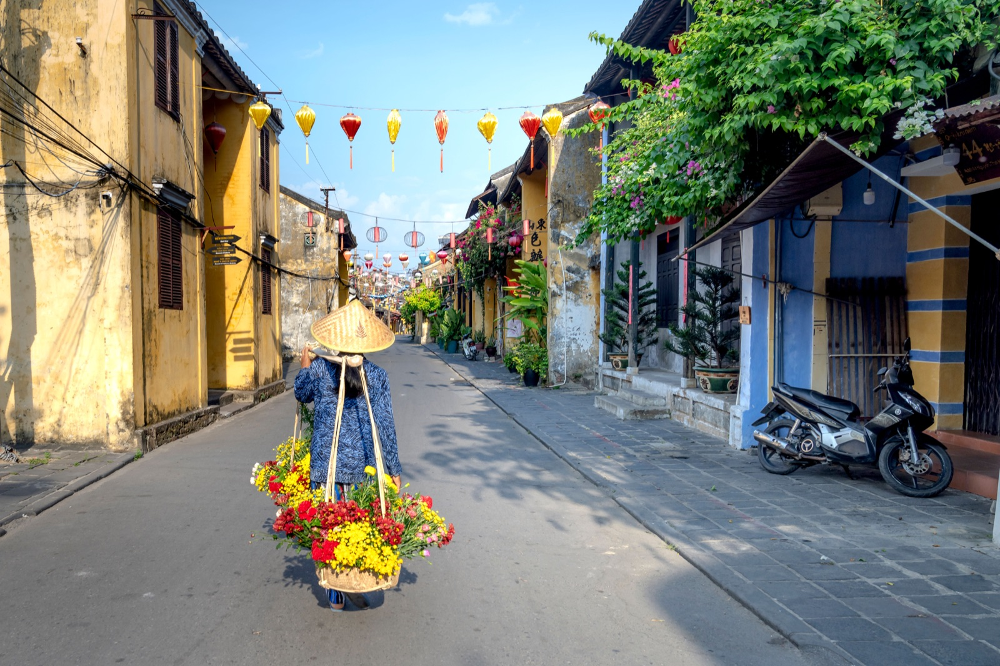
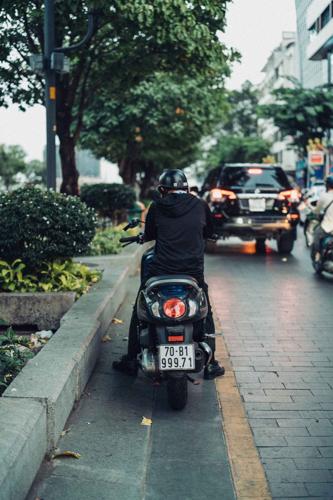

Где парковать байк в Нячанге: стоянки, талоны и безопасность

Свободный кусок тротуара не всегда означает разрешённую стоянку. Надёжный ориентир — охранник, табличка giữ xe, размеченный ряд байков или парковочная зона здания.
Как устроена платная парковка
На въезде сотрудник выдаёт бумажный талон, карту или фотографирует номер. Сохрани талон до выезда: по нему подтверждают, что байк забирает тот же человек. Платят обычно при выезде.

Торговые центры и супермаркеты
Въезд для байков может находиться сбоку, сзади или на подземном этаже. Ищи отдельную полосу для мототранспорта, снижай скорость и следуй жестам сотрудника.
Кафе, рестораны и отели
Спроси: Để xe ở đâu? — «Где оставить байк?» Охранник покажет место и иногда переставит транспорт плотнее. Не оставляй ключ без необходимости.
У пляжа и достопримечательностей
Не закрывай въезд и не мешай пешеходам. У популярных мест выбирай организованную стоянку, даже если до входа нужно пройти. Идеи поездок есть в статье о маршрутах из Нячанга.
Как снизить риск
- выключай зажигание и блокируй руль;
- не оставляй ценности в открытом кармане;
- убирай шлем под сиденье или пристёгивай;
- ночью выбирай освещённую охраняемую стоянку;
- фотографируй ряд и секцию на большой парковке;
- не оставляй парковочный талон в самом байке.
Если байк переставили
Охранники часто уплотняют ряд. Покажи талон и номер сотруднику. Если байка действительно нет, обратись к охране или полиции. Фото транспорта, номера и документов стоит заранее хранить в телефоне.
Короткая памятка
Ищи охранника или знак giữ xe, сохраняй талон, блокируй руль и вечером выбирай охраняемую площадку.